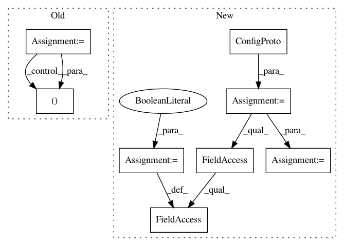

dd3c13d51975d7ca569681dd19639473d19e8e85,server/bert_serving/server/__init__.py,BertWorker,run1,#BertWorker#,347
Before Change
print(r)
def run1(self):
estimator = self.get_estimator()
context = zmq.Context()
receiver = context.socket(zmq.PULL)
receiver.connect(self.worker_address)
sink = context.socket(zmq.PUSH)
sink.connect(self.sink_address)
for r in estimator.predict(self.input_fn_builder(), yield_single_examples=False):
send_ndarray(sink, r["client_id"], r["encodes"])
self.logger.info("job done\tsize: %s\tclient: %s" % (r["encodes"].shape, r["client_id"]))
receiver.close()
sink.close()
After Change
from tensorflow.python.estimator.estimator import Estimator
from tensorflow.python.estimator.run_config import RunConfig
config = tf.ConfigProto(device_count={"GPU": 1})
config.gpu_options.allow_growth = True
config.gpu_options.per_process_gpu_memory_fraction = 0.5
config.log_device_placement = False
print("_run_:%s" % device_lib.list_local_devices())
estimator = Estimator(model_fn, config=RunConfig(session_config=config))
for r in estimator.predict(self.input_fn_builder(), yield_single_examples=False):
print(r)
def run(self):
In pattern: SUPERPATTERN
Frequency: 3
Non-data size: 8
Instances
Project Name: hanxiao/bert-as-service
Commit Name: dd3c13d51975d7ca569681dd19639473d19e8e85
Time: 2018-12-14
Author: hanhxiao@tencent.com
File Name: server/bert_serving/server/__init__.py
Class Name: BertWorker
Method Name: run1
Project Name: keras-team/autokeras
Commit Name: c99295e1903952b3b806c4fd641e28f852b17c36
Time: 2018-04-18
Author: jhfjhfj1@gmail.com
File Name: autokeras/utils.py
Class Name: ModelTrainer
Method Name: train_model